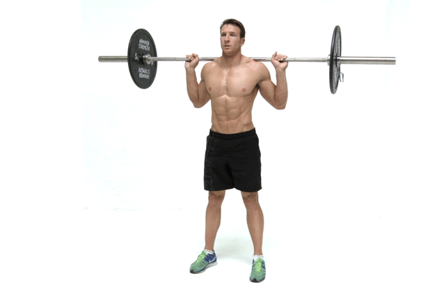
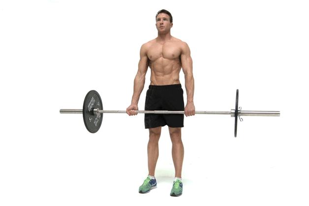
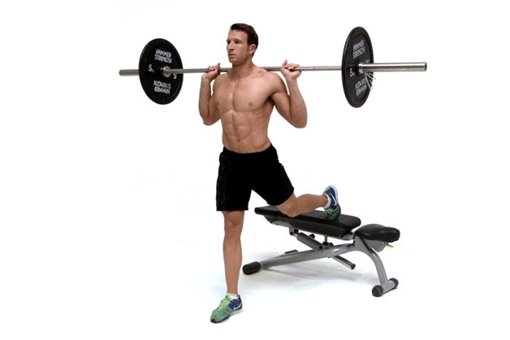
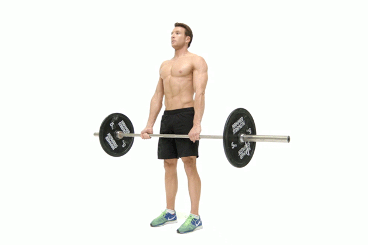
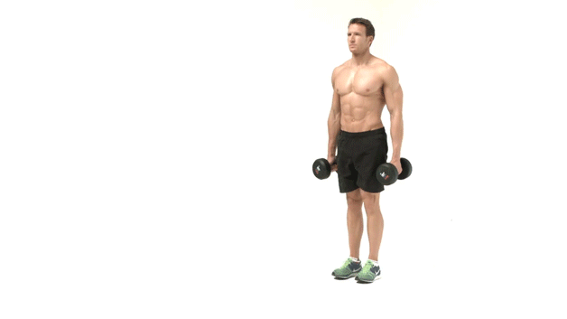
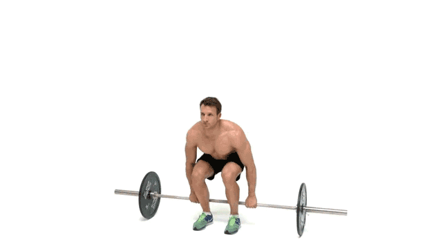
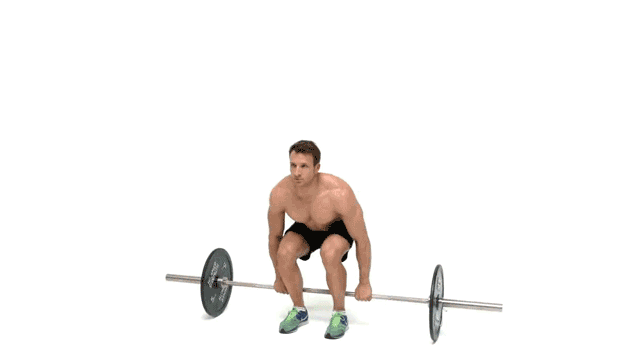

Sample Core Workout 1
Squat (With Barbell)

Front Squat

Olympic Lifts: Snatch And Power Clean

In your workout: This exercise should typically replace the squat in your workout; do it first, when your energy levels are highest. You can hold the bar in the front rack position (also referred to as a clean grip) or with arms crossed. Do multiple sets of 6-10 reps, favoring the lower end if you're looking to build strength. In your workout: These exercises require absolute concentration on technique and body position. Choose one or the other; this should be your very first exercise of the day. Focus on getting a good triple extension (ankles, knees, and hips), almost as if you were jumping with the bar. Stick to reps of 2-3; sets can range from 3-8. 3 sets, 12-15 reps (30-45 seconds rest) 3 sets, 12 reps (30 seconds rest) 3 sets, 12 reps (30 seconds rest)
Deadlift
Bulgarian Split Squat
Romanian Deadlift
Machine Squat
   In your workout: Do 3 sets of 8-20 reps per side, going higher the further back it is in your routine. As you reach muscle failure, jettison the dumbbells, and do a few more reps without them, like you would in a dropset.
8.
In your workout: After free-weight leg exercises, do 3 sets of 8-12 reps. This exercise is especially safe when combined with intensity-boosting techniques such as rest-pause, dropsets, or forced reps.
9.
In your workout: Do the Romanian deadlift as a transition between your frontal and rear thigh exercises, because the glutes are involved in each. Do 3 sets of 8-12 reps, paying particular attention to good form. Work on keeping a neutral spine and really reaching backward with your hips; too many lifters restrict their range of movement when performing this move. Some people will experience a bit of a hamstring quiver when reaching back as far as possible.
In your workout: Do 3 sets of 8-20 reps per side, going higher the further back it is in your routine. As you reach muscle failure, jettison the dumbbells, and do a few more reps without them, like you would in a dropset.
8.
In your workout: After free-weight leg exercises, do 3 sets of 8-12 reps. This exercise is especially safe when combined with intensity-boosting techniques such as rest-pause, dropsets, or forced reps.
9.
In your workout: Do the Romanian deadlift as a transition between your frontal and rear thigh exercises, because the glutes are involved in each. Do 3 sets of 8-12 reps, paying particular attention to good form. Work on keeping a neutral spine and really reaching backward with your hips; too many lifters restrict their range of movement when performing this move. Some people will experience a bit of a hamstring quiver when reaching back as far as possible.
3 sets, 8-12 reps (30 seconds rest) 3 sets, 12 reps (30 seconds rest) 3 sets, 12-15 reps (30 seconds rest) 3 sets, 8 reps (30 seconds rest)
Sample Core Workout 3
Dumbbell Lunge
Leg Press
Hack Squat
Reverse Crunch
 

In your workout: You really can't use much weight on this movement, so push it toward the middle of your leg-training session. Do multiple sets of 8-12 reps per leg, and shoot for close to muscular failure on each set. If you really want to bring up the intensity, try bodyweight Bulgarians with blood flow restriction (BFR). 6. In your workout: Hack squats are typically done after free-weight exercises and before single-joint leg movements. The sweet spot is probably around 3 sets of 8-12 reps. Really control the tempo on these, and avoid locking out your knees at the top to place some serious tension on those quads! In your workout: Beginners should do these first for 3-4 sets of 8-12 reps, using a weight that approaches muscle failure. If done later in your workout, you can allow the reps to drift higher to pump the thighs and glutes. 3 sets, 12-15 reps (30 seconds rest) 3 sets, 12-15 reps (30 seconds rest) 3 sets, 12 reps (30 seconds rest) 3 sets, 12-15 reps (30 seconds rest)
Sample Core Workout 4
Russian Twist
Ab Crunch Machine
Barbell Side Bend
Crunch - Legs On Exercise Ball


3 sets, 12-15 reps (30 seconds rest) 3 sets, 8-12 reps (30-55 seconds rest) 1 set, 8 reps (each side, 30 seconds rest) 3 sets, 8-12 reps (30 seconds rest)
Sample Core Workout 5
Decline Crunch
Dumbbell Side Bend
Exercise Ball Crunch
Flat Bench Leg Pull-In
.gif)


3 sets, 8-12 reps (30-45 seconds rest) 3 sets, 8 reps (30 seconds rest) 3 sets, 12-15 reps (30 seconds rest) 3 sets, 12 reps (30 seconds rest)